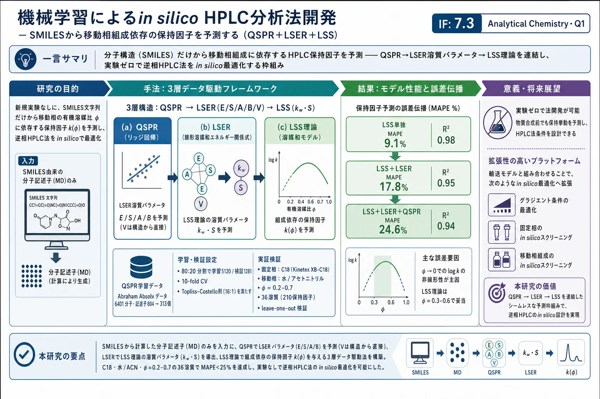
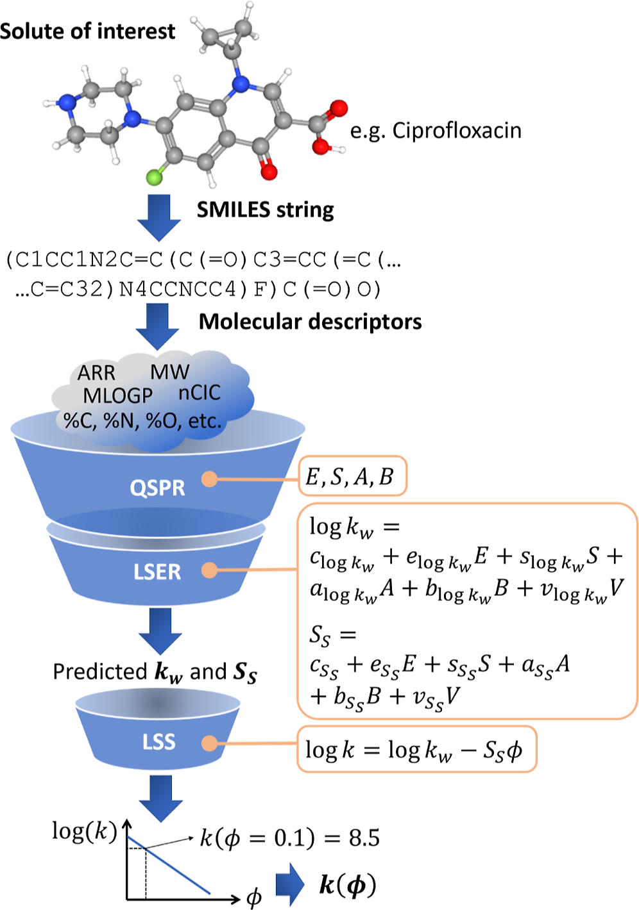
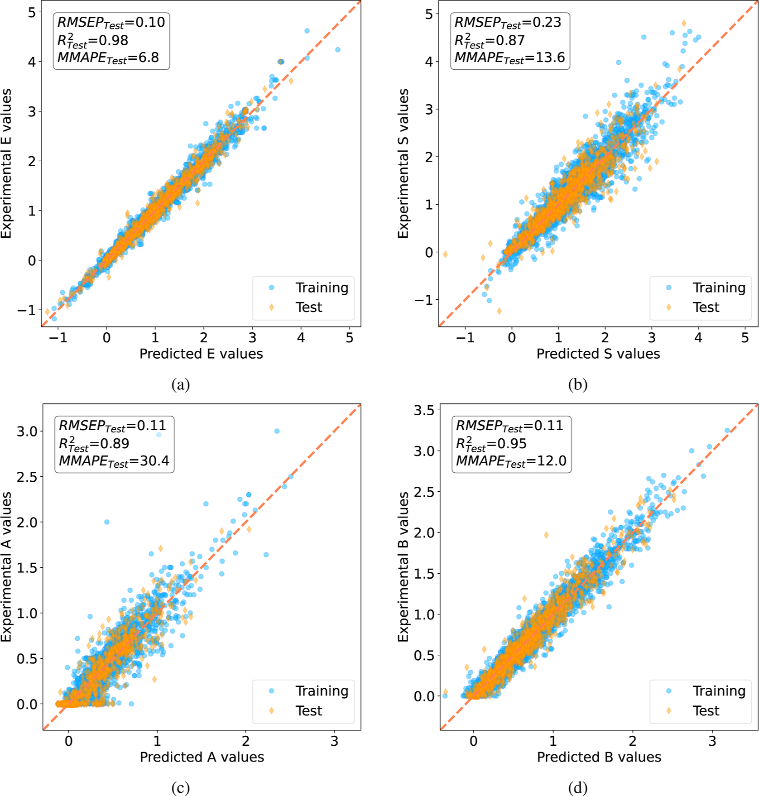
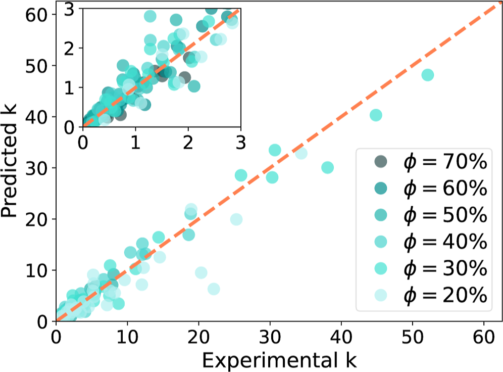
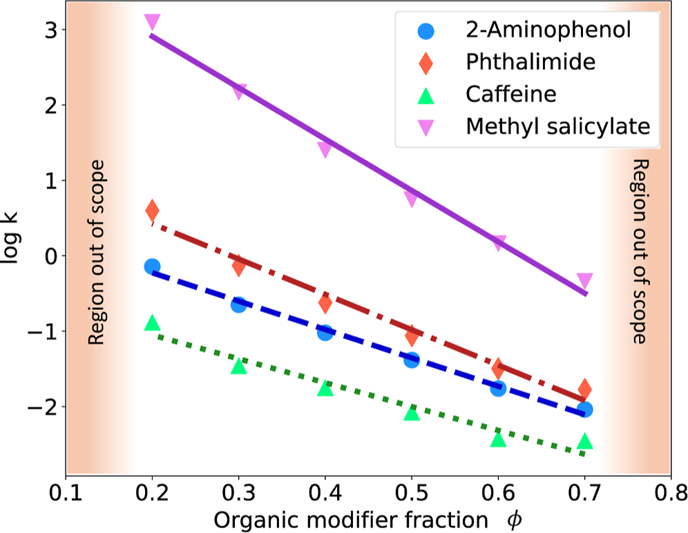

機械学習によるin silico HPLC分析法開発 — SMILESから移動相組成依存の保持因子を予測する（QSPR＋LSER＋LSS）

<!-- 方針: 11ページの計算クロマト論文(Anal. Chem. 2025)の全訳。原文の節構成に忠実。式(1)-(9)・Table1-3・主要数値を保持。対象は低分子一般で生薬ではないが、保持モデリング/メソッド開発/MLの実装例として収録。「> 補足:」は訳者注。 -->
書誌情報
- 標題（原題）: In Silico High-Performance Liquid Chromatography Method Development via Machine Learning
- 著者・所属: Alberto Marchetto, Monica Tirapelle, Luca Mazzei, Eva Sorensen, Maximilian O. Besenhard*（ユニヴァーシティ・カレッジ・ロンドン 化学工学科／ミラノ工科大学）
- 掲載誌・巻号・DOI: Anal. Chem. 2025, 97, 6991−7001. https://doi.org/10.1021/acs.analchem.4c03466
- インパクトファクター: 7.3（Analytical Chemistry, Q1・2024 JCR）。分析化学分野トップ級（111誌中10位）。
- 受理経過 / ライセンス: Received 2024-07-05 / Revised 2025-03-11 / Accepted 2025-03-13 / Published 2025-03-28。CC BY 4.0（Article、オープンアクセス）
補足（この論文の位置づけ）: 対象は生薬・漢方ではなく低分子一般で、内容は「HPLC のメソッド開発（＝適切な条件、特に移動相組成の選定）を、実験を一切せずに、溶質の分子構造（SMILES）だけからコンピュータ上で行う」という計算クロマトグラフィーである。本サイトに収録する理由は、保持モデリング総説（retention-modeling-lc-review）やメソッド開発・QbD の実装例として価値が高いため。QSPR（分子記述子→物性）・LSER（Abraham 溶媒和パラメータ）・LSS 理論（保持の移動相組成依存）という3 つの古典的モデルを連結して、実験前に保持を予測する発想は、生薬の多成分 HPLC 条件設計や in silico スクリーニングにも通じる。
要旨（Abstract）
高速液体クロマトグラフィー（HPLC）は溶液中の分子成分の分析・精製のゴールドスタンダードであり続けている。しかし HPLC 法の開発は材料と時間を要するため、計算による近道が強く望まれる。プロセス開発のデジタル化と HPLC データベースの成長を背景に、本研究は新規実験を一切必要とせず、分子の SMILES（simplified molecular input line entry system）文字列表現から得た分子記述子（MD）のみに依拠して、分子の保持因子を移動相組成の関数として予測するデータ駆動の方法論を提案する。この新アプローチは、(a) MD を用いる定量的構造−物性相関（QSPR）で、(b) 線形溶媒和エネルギー相関（LSER）の溶質依存パラメータを予測し、(c) 線形溶媒強度（LSS）理論と連結する。研究コミュニティが公開した低分子の保持因子実験データ（MD は構造式から決めた SMILES で取得）を用いて本計算法の可能性を実証する。本法は分子成分の溶出時間予測に直接使えるほか、第一原理に基づく機構的輸送モデルと組み合わせれば HPLC 法の in silico 最適化にも使える。いずれも実験負荷を減らし HPLC 法開発を大幅に加速し、医薬品製造サイクルの時間とコストを下げ、上市までの時間を短縮する。HPLC データベースの数と質の増大により、本方法論の予測力は今後さらに高まる。
序論（Introduction）
1960〜70 年代に導入された HPLC は、溶液中の分子成分の分析・分離に学術・産業の双方で不可欠であり続けている。移動相（極性を決める溶媒混合物など）が目的分子（溶質）を含む試料を、微細多孔粒子を充填したカラム（固定相）に通し、固定相・移動相との親和性差が保持時間 t_R を決める。固定相と強く相互作用する溶質ほど遅く溶出する。非保持溶質はシステム固有の死時間 t0（< t_R）で溶出する。よく分離され時間差のある溶出を得ることが HPLC 法開発の第一目標であり、特に本研究が焦点とする逆相 LC（RPLC）で重要となる。
流体力学・輸送現象・吸着熱力学の相互作用は複雑で、適切な HPLC 法（固定相材料・温度・pH・試料量・流速、とりわけ移動相組成）の同定を難しくする。特に複数溶質や化学的に類似した溶質を含む試料で顕著である。この複雑さゆえ、HPLC 法は経験に基づく初期条件と一変数ずつ（OVAT）の試行錯誤で開発されることが多く、複雑試料や新規溶質では失敗リスクが高い（初期段階は試料量も限られる）。
計算による HPLC 法開発: 数十年にわたり計算手法が検討され、精度と計算力の向上でシミュレーションは QbD 概念に統合されつつある。機械学習・AI の強力化で in silico HPLC の重要性は今後さらに増す。理想的には、全 HPLC 設定の溶出への影響を予測するモデルを備えた「デジタル HPLC ツイン」で法開発・検証ができる。この種のモデルには平衡分散モデル・集中速度モデル・一般速度モデルがあり、いずれも第一原理由来だが通常「閉じていない」——解くには溶質固有の吸着等温線や物質移動速度（一般に未知）と結合する必要がある。吸着等温線は多くの変数（温度・pH・移動相組成・溶質濃度）に依存し、多くは半経験的で事前予測できないパラメータを持つ。低濃度では Henry 型（固定相・移動相の濃度が線形比例）に帰着する。温度・pH を考慮したモデルは複雑で未知パラメータが多く、一般には使われない。
溶質吸着と温度・pH・固定相材料の複雑な関係ゆえ、これらの設定は法開発時に一定に保たれることが多い。代わりに移動相組成が最初に変えられる（溶出への影響が強く、変更が容易なため）。移動相組成が吸着（したがって保持時間）をどう変えるかを簡潔に表すのが線形溶媒強度（LSS）理論である。
式(1) log k = log kw − S·φ。ここで k ≡ (t_R − t0)/t0 は溶質の保持因子、φ（0〜1）は移動相中の有機修飾剤（RPLC では最も非極性の溶媒成分）の体積分率、kw は φ→0（純水など）に外挿した保持因子、S は溶媒強度パラメータ。
LSS 理論はその簡潔さから低分子（ペプチド・タンパクも）に広く使われるが、高い有機修飾剤分率では精度が落ち、非線形の改良も提案されている。LSS 理論は pH の大きな変化を考慮できない（パラメータは単一 pH に固有）。溶質吸着等温線を第一原理のみからは（まだ）導けないため、実験はなお必須で、パラメータ（kw・S など）の較正に用いられる。パラメータ推定の実験労力は相当になりうる。
データ駆動 HPLC モデル: この労力ゆえ、較正実験なしに保持を直接予測するデータ駆動モデルが広く認識される。溶質の分子属性を表す記述子（入力）を保持挙動（k、t_R、保持指標など＝出力）に関係づけるモデルを定量的構造−保持相関（QSRR）と呼ぶ。出力が他の物性であるものが QSPR。記述子には分子構造表現への畳み込みフィルタ、分子フィンガープリント、分子記述子（MD）がある。MD は「分子の記号的表現に符号化された化学情報を有用な数値に変換したもの」で、1 分子構造から 5000 超の変換が計算でき、合成前でも構造がわかれば決められる。QSRR/QSPR には重回帰・PLS・決定木・ランダムフォレスト・サポートベクター回帰・勾配ブースティング・ガウス過程回帰・ニューラルネット/深層学習が使われる。
純粋にデータ駆動でない（式が少なくとも部分的に物理原理に基づく）アプローチとして、LSER（Abraham 溶媒和パラメータモデル）による保持予測がある。クロマトでは溶質と HPLC システム（固定相・移動相）の物性を線形モデルで保持に結びつける。
式(2) log k = c + e·E + s·S + a·A + b·B + v·V。大文字 E・S・A・B・V は LSER 溶質パラメータ: E（過剰モル屈折率）＝屈折性、S（双極子性/分極率）＝双極子・双極子誘起双極子相互作用の傾向、A（水素結合酸性）・B（水素結合塩基性）＝水素結合供与/受容の傾向、V（McGowan 分子体積）＝分子体積。小文字 c・e・s・a・b・v は LSER 係数（クロマトシステムパラメータ。溶質に依存せず移動相・固定相間の相互作用を表す）。
システムパラメータは、既知の LSER 溶質パラメータを持つ溶質と固定 φ の移動相での保持実験から推定される。これらは有機修飾剤の種類と φ に依存する（＝φ の未知関数）ため、φ を変えれば新たな係数が必要になる。よって式(2) の形の LSER は HPLC 法開発（φ を動かす）には不向きである。疎水性減算モデルなど類似の計算ツールも数学的に似た限界を持つ。これらモデルと部分モデルの組合せ（疎水性減算モデルや LSS 理論と QSRR を統合して溶質固有係数を予測）は有望だが、新規溶質への予測力は小規模な社内 DB で学習するため乏しいことがあり、単一クロマトシステムに基づく DB は別システムでは使えない。異システム間の保持時間を写像する伝達関数（例: PredRet DB）が提案されているが精度はまだ不十分。METLIN 低分子データセット（8 万超の溶質の構造・保持時間）のような大規模 DB は深層学習ベースの保持時間予測を可能にする。
しかし最も包括的なデータ駆動モデルでも、通常は単一クロマトシステム・特定設定で学習されるため、有機修飾剤分率（分離最適化の鍵）など設定が変わると溶出を予測できず、法開発には使えないという重大な限界がある。in silico で HPLC 法を最適化するには、設定変化に対する溶出を予測できるモデルが必要。設定をモデル入力にすれば可能だが、必要実験数が考慮する設定数のべき乗で増える。
本研究の新規性: 本研究は、データ駆動モデルが「多大なパラメータ推定実験なしに、可変 HPLC 設定に対する溶出時間を予測できない」欠点に取り組み、分子物性を移動相組成依存の保持挙動に結びつける。溶質の SMILES 表現のみに基づいて、最適な移動相組成で HPLC 法を in silico 開発する有望なツールを提供する。
データ駆動方法論（溶媒組成依存の保持因子予測）
本方法論（Figure 1）は、(a) MD を用いる QSPR で (b) LSER 溶質パラメータを予測し、(c) LSS 理論で分子の保持挙動を可変移動相組成と結びつける。

まず溶質の分子構造（SMILES）から MD を決め、それを 4 つの QSPR モデルの入力として、LSER 溶質パラメータ E・S・A・B（保持因子/時間ではない）を予測する。5 番目のパラメータ V は分子構造から直接決まる。これら溶質パラメータと（単一 φ に限らない）HPLC システムパラメータを備えた 2 つの LSER で、各溶質の LSS パラメータ kw・S（式1）を決める。これにより等溶媒（φ 一定）HPLC の移動相組成の in silico 最適化、あるいは輸送モデルと組み合わせてグラジエント HPLC の初期/最終組成と動的変化の最適化が可能になる。QSPR による LSER 溶質パラメータ予測
LSER 溶質パラメータ E・S・A・B は通常実験で決めるが時間・材料・複数手法を要する。データ駆動の代替は、MD を入力とする QSPR で、既存の LSER 溶質パラメータ DB を学習に使うこと。大規模 DB（Helmholtz 環境研究センターの UFZ-LSER DB＝7000 超、SoluteDB＝各パラメータ 7000〜8000 超、Wayne 州立大の標準化データセット＝数百溶質）が利用可能。本研究は UFZ-LSER DB 由来の Abraham Absolv データセット（当時 7881 分子） を使用。(a) 4 パラメータのいずれかが欠損、(b) SMILES 不明、(c) 重複、(d) 分子量 80〜400 g/mol 外、を除去して 6437 溶質に、さらに方法論実証用の 36 分子を除外して 6401 溶質 を QSPR 開発に用いた。
MD の初期選定: alvaDesc で SMILES から MD を取得。構成指標・分子特性・トポロジー指標・環記述子・連結性指標・2D 自己相関・Getaway 記述子など計 804 MD（SMILES は 3D 情報を持たないため 3D MD は不採用）。（ほぼ）一定の MD と欠損の多い 1 MD を除いて 612 MD に削減。
QSPR の構築: E・S・A・B ごとに 4 つの QSPR を、重み減衰正則化つき最小二乗（リッジ回帰）で開発。ニューラルネットも試したが、複雑さの割に予測性能はリッジ回帰と大差なかった。正則化項が無関係な MD の重みを抑え過学習を緩和。
式(3) J = (1/2)·Σᵢ₌₁ᴺ (bᵀ + wᵀxᵢ − y_exp,i)² + (α/2)·wᵀw。N＝学習溶質数、y_exp,i＝溶質 i の LSER 溶質パラメータ実験値、xᵢ＝MD ベクトル、b＝切片、w＝モデルパラメータ、α＝正則化ハイパーパラメータ（10-fold CV で決定）。
学習データは 6401 分子を 80:20 分割（学習 5120・検証 1281）。リッジ回帰は w を小さくするがゼロにはしない（lasso と異なる）ため、入力数削減は下記で対処。
QSPR 予測性能と冗長 MD の除去: 入力 MD 数を減らしてロバスト化するため、対相関法でさらに削減（高相関の 2 MD の一方を除いても情報損失は小さい）。相関閾値を段階的に上げ、各段で CV により予測性能を評価。半分の MD を除いても精度がほぼ一定であることから、相関閾値 0.85 に対応する 313 MD を最終入力に選定。パリティプロット（Figure 3）は RMSEP（式6）・R²（式7）・修正 MAPE（MMAPE、式8）を示し過学習なし。Topliss–Costello 則（学習観測数:入力変数 ≥ 5:1）に対し本 QSPR は 16:1（5120 分子:313 MD） で余裕を持って満たす。

LSER による LSS 理論パラメータ予測
LSS パラメータ kw・S の LSER による予測は Poole & Atapattu が実証。彼らは 17 カラム（水−メタノール）・15 カラム（水−アセトニトリル）の低分子保持因子に依拠し、式(2) の代わりに次の 2 つの LSER を用いた:
式(4) log kw = c_kw + e_kw·E + s_kw·S + a_kw·A + b_kw·B + v_kw·V 式(5) S = c_S + e_S·E + s_S·S + a_S·A + b_S·B + v_S·V
この LSER は 2 式・12 システムパラメータ（式4/5 各 6 個）から成る。利点は、式(2) のシステムパラメータが φ の関数（φ が変われば再較正が必要）なのに対し、式(4)(5) のパラメータは φ に依存しない（固定相と移動相構成成分には依存）こと。これら 12 パラメータは、LSS 理論（式1 を実験保持因子に当てはめ）で得た log kw・S を用い最小二乗回帰で得た。本研究では Poole & Atapattu の値を直接使わず、検証溶質を除いた（leave-one-out）データで同様に較正。log kw は自然対数として扱った。
LSER 開発用の保持データ: Poole 教授から直接提供された Kinetex XB-C18（Phenomenex）・水−アセトニトリル の保持因子データ（本論文 SI で公開）。48 溶質（Table 1）の 10/20/30/40/50/60/70% v/v の保持因子（一部欠損、計 210 保持因子）。
LSER の開発: 各溶質の LSS パラメータ log kw・S は、実験保持因子の自然対数を φ に線形回帰（LSS 理論は log k を φ に線形に関係づける）して得た。Poole & Atapattu にならい φ=0.2〜0.7 に制限。一部溶質では LSS 理論が log k 対 φ をうまく表せなかったため、当てはめの MAPE（式9）が 12% 未満の溶質のみ残し、48→36 溶質に削減（Table 2 に選定 36 分子の MD 統計）。
Table 2. LSER データセットに残した36分子の主要MD（最小・25/50/75百分位・最大）
| MD | 最小 | 25% | 50% | 75% | 最大 |
|---|---|---|---|---|---|
| MW（g/mol） | 92 | 116 | 132 | 150 | 236 |
| nAT（原子数） | 12 | 15 | 16 | 18 | 26 |
| nSK（非水素原子数） | 7 | 8 | 9 | 10 | 14 |
| ARR（芳香族比） | 0.33 | 0.60 | 0.67 | 0.75 | 1.00 |
| %C | 33.3 | 41.6 | 44.4 | 47.8 | 52.9 |
| %H | 7.7 | 38.2 | 42.1 | 47.8 | 57.7 |
| %N | 0.0 | 0.0 | 1.9 | 6.7 | 16.7 |
| %O | 0.0 | 0.0 | 6.3 | 11.8 | 20.0 |
| %X（ハロゲン） | 0.0 | 0.0 | 0.0 | 0.0 | 38.5 |
予測性能の誤差指標
式(6) RMSEP = √[(1/M)·Σₘ₌₁ᴹ (y_exp,m − y_pred,m)²] 式(7) R² = 1 − Σ(y_exp,m − y_pred,m)² / Σ(y_exp,m − ȳ_exp)² 式(8) MMAPE = (1/M)·Σ |（y_exp,m − y_pred,m）/ ȳ_exp|·100 式(9) MAPE = (1/M)·Σ |（y_exp,m − y_fit,m）/ y_exp,m|·100
ここで y_exp,m＝m 番目の実験値、y_pred,m＝予測値、ȳ_exp＝実験値の平均、M＝検証試料数。QSPR には MAPE でなく MMAPE を用いた（A・B は多くの低分子でゼロに近く/等しく、MAPE が発散するため）。
方法論の実証（Methodology at Work）
完全な方法論の検証に leave-one-out を採用。LSER データセットの 36 溶質のうち 1 溶質を除外して残り 35 で LSER システムパラメータを較正、これを 36 回繰り返して全溶質を 1 回ずつ検証（各溶質最大 6 種の移動相分率、φ=0.1 は除外）。36 溶質は QSPR の学習・検証にも使っていないため完全に独立。
概念実証: 各溶質について新規の 2 つの LSER で kw・S を決め、式(1) で各 φ の k を予測、対応する実験値（36 溶質 × 5〜6 分率＝計 210 値）と比較。パリティプロット（Figure 5）は、SMILES だけを入力に用いたにもかかわらず保持因子が良好に推定でき、MAPE が 25% 未満（Table 3）であることを明瞭に示した。

誤差伝播: 実験情報が多いほど必要モデルが減り予測が正確になる。(i) LSS 理論のみ、(ii) LSS＋LSER（実験 LSER 溶質パラメータ使用）、(iii) LSS＋LSER＋QSPR（実験なし）で誤差が段階的に増える。実験保持因子を真値と仮定した誤差伝播:
Table 3. 保持因子 k の誤差伝播
| 誤差指標 | LSS単独 | LSS＋LSER | LSS＋LSER＋QSPR |
|---|---|---|---|
| MAPE | 9.1% | 17.8% | 24.6% |
| RMSEP | 0.98 | 1.8 | 1.9 |
| R² | 0.98 | 0.95 | 0.94 |
より大きな LSER 学習データ（毎回 35 溶質のみ）が望まれるものの、方法論誤差は主に LSS 理論の不正確さに帰せられる。これは φ→0 で log k が非線形に増える一般的挙動を LSS 理論が捉えられないため（Figure 4 より、log k 対 φ の線形性は概ね 30% < φ < 60% でのみ妥当）。二次などのより複雑な溶媒強度モデルで拡張しうるが、追加パラメータ予測に追加 LSER が要るため本研究では扱わない。

結論と展望（Conclusions and Perspectives）
本方法論は、溶質の分子構造のみを用いて移動相依存の保持因子を予測する実用的解を提供する。特定 HPLC 設定に対して保持を予測する他のデータ駆動ツールと異なり、本アプローチは移動相プロファイルの最適化に向けた有望な in silico ツールとなる。入力が MD のみ（構造式から直接得られる）なので、実験用に物質を合成する前でも適用できる。QSPR（MD→LSER パラメータ）＋LSER＋古典的 LSS 理論の多モデル連結が機能の源泉である。概念実証のデータは小規模だったが、SMILES のみで C18 系の低分子の移動相依存保持因子を MAPE < 25% で予測でき、大規模学習データで予測力の大幅改善が期待される。ただしデータ量だけでなく質（学習分子と予測対象の「類似性」）が同等に重要である。QSPR は 5000 超の低分子で学習したが、LSER システムパラメータ予測には類似のサイズ・極性・官能基構成の 35 溶質しか使えず、これらと大きく異なる溶質の予測は難しい。真に汎用にするには、(1) データセットの分子多様性が予測対象を代表すること、(2) 学習データと対象溶質の類似度（MD で捉えた分子特徴）を定量的に示すこと、が重要である。
第一原理の機構的輸送モデルと組み合わせれば、開発初期に HPLC 法を in silico 最適化でき、多くの初期実験をデータ駆動予測で代替して実験負荷を大幅に減らせる。各種カラム・有機修飾剤の LSER システムパラメータを整えれば、固定相・移動相の in silico スクリーニングも可能になる。ただし、共溶出しやすい複雑な多成分試料では実験を完全に置き換えるには至らず、あくまで各種移動相組成にわたる溶出時間の信頼できる初期推定（pH 変化は非対象）を、事前実験なしに与えるものである。総じて本方法論は、追加実験なしに既存 DB を活用して等温線パラメータを予測する有望な解であり、HPLC データベースの急成長でさらに強力になりうる。ハイブリッドモデルから汎用性を得て、実試料入手前の法開発を可能にし、実験プロセスを合理化して時間と資源を節約する。
参考文献
原文はACS方式（本文中は上付き番号で引用）。以下は文献番号順の一覧。
- Horvath, C. G.; Lipsky, S. Nature 1966, 211 (5050), 748−749.
- Arnaud, C. H. 50 years of HPLC. A look back at the history of high-performance liquid chromatography and the column-packing materials that enabled its success. 2016, https://cen.acs.org/articles/94/i24/50-years-HPLC.html (accessed July 18, 2023).
- Guiochon, G.; Felinger, A.; Shirazi, D. G. Fundamentals of Preparative and Nonlinear Chromatography; Elsevier, 2006.
- Schmidt-Traub, H.; Schulte, M.; Seidel-Morgenstern, A.; Schmidt-Traub, H. Preparative Chromatography; Wiley Online Library, 2012.
- Ahmed, K.; Pathmanathan, P.; Kabadi, S.; Doren, J.; Kruhlak, N.; Lumen, A.; Martinez, M.; Morrison, T.; Schuette, P.; Tegenge, M.; et al. Successes and Opportunities in Modeling & Simulation for FDA; US Food and Drug Administration Report, 2022.
- Fekete, S.; Molnár, I. Software-Assisted Method Development in High Performance Liquid Chromatography; World Scientific, 2018.
- Besenhard, M. O.; Tsatse, A.; Mazzei, L.; Sorensen, E. Curr. Opin. Chem. Eng. 2021, 32, 100685.
- Chen, Y.; Yang, O.; Sampat, C.; Bhalode, P.; Ramachandran, R.; Ierapetritou, M. Processes 2020, 8 (9), 1088.
- Shekhawat, L. K.; Rathore, A. S. Prep. Biochem. Biotechnol. 2019, 49 (6), 623−638.
- Katsoulas, K.; Tirapelle, M.; Sorensen, E.; Mazzei, L. J. Chromatogr., A 2023, 1708, 464345.
- Al-Ghouti, M. A.; Da'ana, D. A. J. Hazard Mater. 2020, 393, 122383.
- Liu, X.; Kaczmarski, K.; Cavazzini, A.; Szabelski, P.; Zhou, D.; Guiochon, G. Biotechnol. Prog. 2002, 18 (4), 796−806.
- Marchetti, N.; Dondi, F.; Felinger, A.; Guerrini, R.; Salvadori, S.; Cavazzini, A. J. Chromatogr., A 2005, 1079 (1−2), 162−172.
- De Luca, C.; Felletti, S.; Macis, M.; Cabri, W.; Lievore, G.; Chenet, T.; Pasti, L.; Morbidelli, M.; Cavazzini, A.; Catani, M.; et al. J. Chromatogr., A 2020, 1616, 460789.
- Gritti, F.; Guiochon, G. J. Chromatogr., A 2004, 1041 (1−2), 63−75.
- Ahmad, T.; Guiochon, G. J. Chromatogr., A 2006, 1129 (2), 174−188.
- Ahmad, T.; Guiochon, G. J. Chromatogr., A 2007, 1142 (2), 148−163.
- Jandera, P.; Krupczynska, K.; Vynuchalová, K.; Buszewski, B. J. Chromatogr., A 2010, 1217 (39), 6052−6060.
- Snyder, L. R. J. Chromatogr., A 1964, 13, 415−434.
- Tyteca, E.; De Vos, J.; Vankova, N.; Cesla, P.; Desmet, G.; Eeltink, S. J. Sep. Sci. 2016, 39 (7), 1249−1257.
- Schoenmakers, P. J.; Tijssen, R. J. Chromatogr., A 1993, 656 (1−2), 577−590.
- Neue, U. Chromatographia 2006, 63 (S13), S45−S53.
- Domingo-Almenara, X.; Guijas, C.; Billings, E.; Montenegro-Burke, J. R.; Uritboonthai, W.; Aisporna, A. E.; Chen, E.; Benton, H. P.; Siuzdak, G. Nat. Commun. 2019, 10 (1), 5811.
- Yang, Q.; Ji, H.; Lu, H.; Zhang, Z. Anal. Chem. 2021, 93 (4), 2200−2206.
- Bouwmeester, R.; Martens, L.; Degroeve, S. Anal. Chem. 2019, 91 (5), 3694−3703.
- Poole, C.; Cabooter, D. J. Chromatogr., A 2022, 1684, 463579.
- Aalizadeh, R.; Alygizakis, N. A.; Schymanski, E. L.; Krauss, M.; Schulze, T.; Ibanez, M.; McEachran, A. D.; Chao, A.; Williams, A. J.; Gago-Ferrero, P.; et al. Anal. Chem. 2021, 93 (33), 11601−11611.
- Kaliszan, R. Chem. Rev. 2007, 107 (7), 3212−3246.
- Consonni, V.; Todeschini, R. Molecular Descriptors for Chemoinformatics: Volume I: Alphabetical Listing/Volume II: Appendices, References; John Wiley & Sons, 2009.
- Taraji, M.; Haddad, P. R.; Amos, R. I.; Talebi, M.; Szucs, R.; Dolan, J. W.; Pohl, C. A. Anal. Chim. Acta 2018, 1000, 20−40.
- Fedorova, E. S.; Matyushin, D. D.; Plyushchenko, I. V.; Stavrianidi, A. N.; Buryak, A. K. J. Chromatogr., A 2022, 1664, 462792.
- Todeschini, R.; Consonni, V. Molecular Descriptors for Chemoinformatics, 2 Vol. Set: Vol. I: Alphabetical Listing/Vol. II: Appendices, References; Wiley VCH, 2009; Vol. 41.
- Mauri, A. alvaDesc: A Tool to Calculate and Analyze Molecular Descriptors and Fingerprints; Ecotoxicological QSARs, 2020; pp 801−820.
- Kaliszan, R. J. Chromatogr., A 1993, 656 (1), 417−435.
- Zhang, X.; Li, J.; Wang, C.; Song, D.; Hu, C. J. Pharm. Biomed. Anal. 2017, 145, 262−272.
- Put, R.; Daszykowski, M.; Baczek, T.; Vander Heyden, Y. J. Proteome Res. 2006, 5 (7), 1618−1625.
- Taraji, M.; Haddad, P. R.; Amos, R. I.; Talebi, M.; Szucs, R.; Dolan, J. W.; Pohl, C. A. J. Chromatogr., A 2017, 1486, 59−67.
- Put, R.; Perrin, C.; Questier, F.; Coomans, D.; Massart, D.; Vander Heyden, Y. J. Chromatogr., A 2003, 988 (2), 261−276.
- Goudarzi, N.; Shahsavani, D.; Emadi-Gandaghi, F.; Chamjangali, M. A. J. Chromatogr., A 2014, 1333, 25−31.
- Ladiwala, A.; Rege, K.; Breneman, C. M.; Cramer, S. M. Langmuir 2003, 19 (20), 8443−8454.
- Aicheler, F.; Li, J.; Hoene, M.; Lehmann, R.; Xu, G.; Kohlbacher, O. Anal. Chem. 2015, 87 (15), 7698−7704.
- Liapikos, T.; Zisi, C.; Kodra, D.; Kademoglou, K.; Diamantidou, D.; Begou, O.; Pappa-Louisi, A.; Theodoridis, G. J. Chromatogr. B 2022, 1191, 123132.
- Osipenko, S.; Bashkirova, I.; Sosnin, S.; Kovaleva, O.; Fedorov, M.; Nikolaev, E.; Kostyukevich, Y. Anal. Bioanal. Chem. 2020, 412, 7767−7776.
- Maboudi Afkham, H.; Qiu, X.; The, M.; Käll, L. Bioinformatics 2017, 33 (4), 508−513.
- Tham, S.; Agatonovic-Kustrin, S. J. Pharm. Biomed. Anal. 2002, 28 (3), 581−590.
- Ruggieri, F.; D'Archivio, A. A.; Carlucci, G.; Mazzeo, P. J. Chromatogr., A 2005, 1076 (1), 163−169.
- Taft, R. W.; Abboud, J.-L. M.; Kamlet, M. J.; Abraham, M. H. J. Solution Chem. 1985, 14, 153−186.
- Sadek, P. C.; Carr, P. W.; Doherty, R. M.; Kamlet, M. J.; Taft, R. W.; Abraham, M. H. Anal. Chem. 1985, 57 (14), 2971−2978.
- Vitha, M.; Carr, P. W. J. Chromatogr., A 2006, 1126 (1−2), 143−194.
- Kaliszan, R. Encycl. Sep. Sci. 2000, 4063−4075.
- Snyder, L.; Dolan, J.; Carr, P. Anal. Chem. 2007, 79 (9), 3254−3262.
- Zuvela, P.; Skoczylas, M.; Jay Liu, J.; Baczek, T.; Kaliszan, R.; Wong, M. W.; Buszewski, B. Chem. Rev. 2019, 119 (6), 3674−3729.
- Andric, F.; Héberger, K. J. Chromatogr., A 2017, 1488, 45−56.
- Wen, Y.; Talebi, M.; Amos, R. I.; Szucs, R.; Dolan, J. W.; Pohl, C. A.; Haddad, P. R. J. Chromatogr., A 2018, 1541, 1−11.
- Park, S. H.; Haddad, P. R.; Talebi, M.; Tyteca, E.; Amos, R. I.; Szucs, R.; Dolan, J. W.; Pohl, C. A. J. Chromatogr., A 2017, 1486, 68−75.
- Wiczling, P.; Kamedulska, A. Anal. Chem. 2024, 96 (3), 1310−1319.
- Stanstrup, J.; Neumann, S.; Vrhovsek, U. Anal. Chem. 2015, 87 (18), 9421−9428.
- D'Archivio, A. A.; Ruggieri, F.; Mazzeo, P.; Tettamanti, E. Anal. Chim. Acta 2007, 593 (2), 140−151.
- Weininger, D. J. Chem. Inf. Comput. Sci. 1988, 28 (1), 31−36.
- McGowan, J. C. J. Chem. Technol. Biotechnol. 1978, 28 (9), 599−607.
- Zhao, Y. H.; Abraham, M. H.; Zissimos, A. M. J. Chem. Inf. Comput. Sci. 2003, 43 (6), 1848−1854.
- Ulrich, N.; Endo, S.; Brown, T.; Watanabe, N.; Bronner, G.; Abraham, M.; Goss, K. UFZ-LSER Database V 3.2.1 [internet]; Helmholtz Centre for Environmental Research-UFZ: Leipzig, Germany, 2017.
- Chung, Y.; Vermeire, F. H.; Wu, H.; Walker, P. J.; Abraham, M. H.; Green, W. H. J. Chem. Inf. Model. 2022, 62 (3), 433−446.
- Poole, C. F. J. Chromatogr., A 2020, 1617, 460841.
- Tibshirani, R. J. Roy. Stat. Soc. B 1996, 58, 267−288.
- Bishop, C. M. Pattern Recognition and Machine Learning; Springer, 2006; Vol. 4.
- Hoerl, A. E.; Kennard, R. W. Technometrics 1970, 12 (1), 55−67.
- Topliss, J. G.; Costello, R. J. J. Med. Chem. 1972, 15 (10), 1066−1068.
- Cherkasov, A.; Muratov, E. N.; Fourches, D.; Varnek, A.; Baskin, I. I.; Cronin, M.; Dearden, J.; Gramatica, P.; Martin, Y. C.; Todeschini, R.; et al. J. Med. Chem. 2014, 57 (12), 4977−5010.
- Poole, C. F.; Atapattu, S. N. J. Chromatogr., A 2022, 1675, 463153.
- Atapattu, S. N.; Poole, C. F.; Praseuth, M. B. Chromatographia 2018, 81, 373−385.
訳者補足（実務者向けの読みどころ）
以下は原文に無い、実務観点の補足である（本文の訳と混ぜない）。
- 3つのモデルを「バケツリレー」する発想: ①QSPR（分子記述子→溶質の性質 E/S/A/B）→②LSER（溶質の性質→φ非依存の kw・S）→③LSS 理論（kw・S→各 φ での保持 k）。鍵は「φ に依存しないパラメータ（式4/5）を経由する」こと。これにより、移動相の有機溶媒比を動かしても再較正なしに保持を予測でき、従来の QSRR が苦手だった「条件を変えたときの予測」が可能になる。
- なぜ生薬QCに関係するか: 生薬の多成分 HPLC 法を組むとき、成分ごとの保持挙動を移動相組成で予測できれば、グラジエント設計や分離の当たりを実験前に付けられる。本サイトの保持モデリング総説（
retention-modeling-lc-review）やメソッド開発・QbD 論文の「計算で条件を絞る」思想の最新実装として読める。 - 限界を正直に: 精度は MAPE 25% 程度（実用の初期推定レベル）で、誤差の主因は LSS 理論が φ=0.3–0.6 の外で崩れること。学習データの「類似性」が効くため、対象と大きく異なる分子には外挿しない——この「適用範囲（applicability domain）を数値で示せ」という戒めは、あらゆるデータ駆動 QC モデル（NIR・ケモメトリクス含む）に共通する実務上の要点。
- 用語: 保持因子 k＝(t_R−t0)/t0（保持の無次元指標）、φ＝移動相中の有機溶媒体積分率、LSS＝線形溶媒強度理論（log k が φ に線形）、LSER＝線形溶媒和エネルギー相関（Abraham パラメータ E/S/A/B/V）、QSPR/QSRR＝定量的構造−物性/保持相関、MD＝分子記述子、SMILES＝分子構造の文字列表現、リッジ回帰＝重み減衰つき線形回帰、leave-one-out＝1つ抜き交差検証、MAPE/RMSEP/R²＝予測誤差指標。